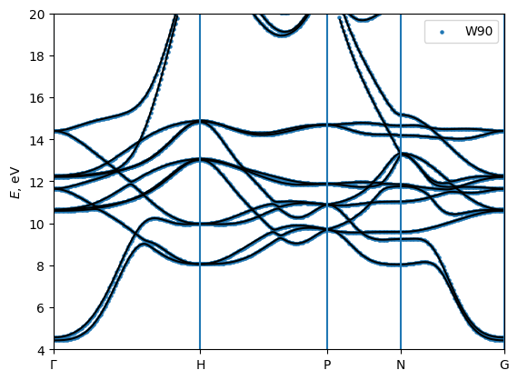
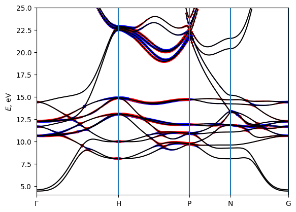
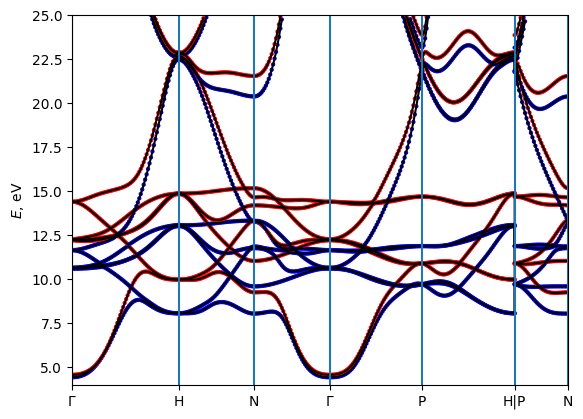
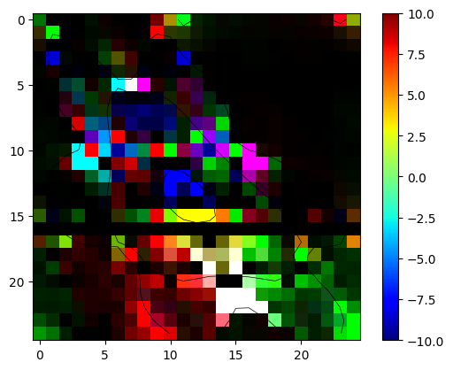
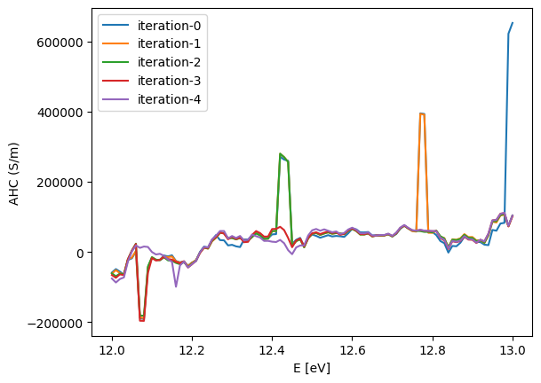
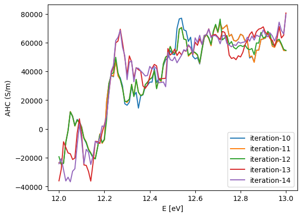
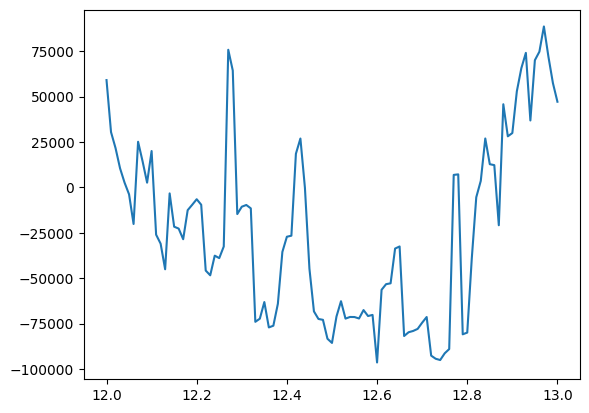
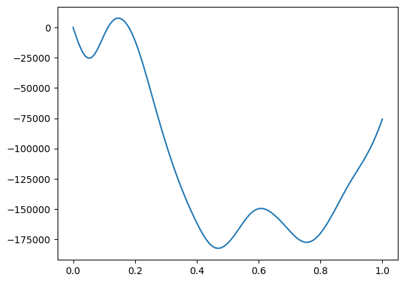

Basic tutorial: Interpolating bands, Berry curvatures, and integrating them
In this tutorial we will see how to compute band energies, Berry curvature, spins and anomalous Hall conductivity using WannierBerri code and further integrate them over the Brillouin zone to obtain Anomalous Hall conductivity, and other quantities of interest.
Here we use the wannier functions obtained by wannier90 code for bcc Fe. In other tutorials we will see how to obtain the wannier functions using WannierBerri code itself.
Preparation of a calculation:
import the needed modules
initialize a Parallel() or Serial() class
[1]:
# Preliminary
# Set environment variables - not mandatory but recommended if you use parallel with maximum number of CPUs
#import os
#os.environ['OPENBLAS_NUM_THREADS'] = '1'
#os.environ['MKL_NUM_THREADS'] = '1'
import ray
ray.init(num_cpus=8)
/home/stepan/github/WannierBerri-tutorial/.conda/lib/python3.12/site-packages/tqdm/auto.py:21: TqdmWarning: IProgress not found. Please update jupyter and ipywidgets. See https://ipywidgets.readthedocs.io/en/stable/user_install.html
from .autonotebook import tqdm as notebook_tqdm
2026-03-30 22:31:01,134 INFO util.py:154 -- Missing packages: ['ipywidgets']. Run `pip install -U ipywidgets`, then restart the notebook server for rich notebook output.
2026-03-30 22:31:02,821 INFO worker.py:1918 -- Started a local Ray instance. View the dashboard at http://127.0.0.1:8265
[1]:
| Python version: | 3.12.12 |
| Ray version: | 2.48.0 |
| Dashboard: | http://127.0.0.1:8265 |
[2]:
import wannierberri as wberri
print (f"Using WannierBerri version {wberri.__version__}")
import numpy as np
import scipy
import matplotlib.pyplot as plt
%matplotlib inline
Using WannierBerri version 26.3.3.dev2+g2858c459a
Reading the system
Now we need to define the system that we are working on. Wannierberri can equally work with Wannier functions obtained by Wannier90 or other code (e.g. ASE or FPLO), as well as tight-binding models. This is done by constructing a System() class or one of its subclasses. Below, an example for Wannier90 is given; in advanced tutorials, some tight-binding models are also used.
[3]:
# Importing data from wannier90
wandata = wberri.WannierData.from_w90_files(seedname='w90_files/Fe', files=['mmn', 'eig', 'chk', 'spn'])
# Create the system object
system=wberri.System_R.from_wannierdata(wandata=wandata,
berry=True, # needed to calculate "external terms" of Berry connection or curvature , reads ".mmn" file
spin = True , # needed for spin properties, reads ".spn" file
)
# Setting the pointgroup from the symmetry operations
from irrep.spacegroup import SpaceGroup
spacegroup = SpaceGroup.from_cell(real_lattice=system.real_lattice,
positions=[[0,0,0]], # only 1 Fe atoms at origin
typat=[1], # atomic number is not important here
spinor=True,
magmom=[[0,0,1]], # magnetic moment along z
include_TR=True, # include symmetries that involve time-reversal (TR)
# operations, but preserve thye spins,
# like TR*C2x, but not TR alone
)
system.set_pointgroup(spacegroup=spacegroup)
# Alternatively, one can set the pointgroup from a list of generators, but one needs to be careful, not to
# include symmetries that are not present in the system,
# generators=["Inversion","C4z","TimeReversal*C2x"]
# system.set_pointgroup(symmetry_gen=generators)
Reading restart information from file w90_files/Fe.chk :
Time to read .chk : 0.009166479110717773
Shells found with weights [0.41728407] and tolerance 3.8462013121284953e-16
----------
SPN
---------
reading w90_files/Fe.spn : Created on 7May2022 at 16: 2:47
----------
SPN OK
---------
irreducible : False, symmetrize set to False
setting Rvec
setting AA..
setting AA - OK
Real-space lattice:
[[ 1.4349963 1.4349963 1.4349963]
[-1.4349963 1.4349963 1.4349963]
[-1.4349963 -1.4349963 1.4349963]]
Number of wannier functions: 18
Number of R points: 89
Recommended size of FFT grid [4 4 4]
saving WannierDate and or System as npz files
To be able to load the data faster in the future, one can save the WannierData or System objects as npz files, and load them later. This is especially useful if the data is large, and reading from the original files (e.g. .mmn, .chk, .spn) is time consuming.
[4]:
wandata.to_npz("Fe_wannierdata_npz")
system.to_npz("Fe_system_npz")
wandata_loaded = wberri.WannierData.from_npz("Fe_wannierdata_npz", files=['mmn', 'eig', 'chk', 'spn'])
system_loaded = wberri.System_R.from_npz("Fe_system_npz")
saving to Fe_wannierdata_npz.chk.npz :
saving to Fe_wannierdata_npz.bkvec.npz :
saving to Fe_wannierdata_npz.mmn.npz :
saving to Fe_wannierdata_npz.eig.npz :
saving to Fe_wannierdata_npz.spn.npz :
saving system of class System_R to Fe_system_npz
properties: ['num_wann', 'real_lattice', 'iRvec', 'periodic', 'is_phonon', 'wannier_centers_cart', 'pointgroup']
saving num_wann
saving num_wann to Fe_system_npz/num_wann.npz
- Ok!
saving real_lattice
saving real_lattice to Fe_system_npz/real_lattice.npz
- Ok!
saving iRvec
saving iRvec to Fe_system_npz/iRvec.npz
- Ok!
saving periodic
saving periodic to Fe_system_npz/periodic.npz
- Ok!
saving is_phonon
saving is_phonon to Fe_system_npz/is_phonon.npz
- Ok!
saving wannier_centers_cart
saving wannier_centers_cart to Fe_system_npz/wannier_centers_cart.npz
- Ok!
saving pointgroup
saving pointgroup to Fe_system_npz/pointgroup.npz
- Ok!
saving Ham - Ok!
saving SS - Ok!
saving AA - Ok!
files = ['mmn', 'eig', 'chk', 'spn', 'bkvec']
Trying to read file mmn from npz Fe_wannierdata_npz.mmn.npz
setting file mmn from npz Fe_wannierdata_npz.mmn.npz as <wannierberri.w90files.mmn.MMN object at 0x75b4d6640bf0>
Trying to read file eig from npz Fe_wannierdata_npz.eig.npz
setting file eig from npz Fe_wannierdata_npz.eig.npz as <wannierberri.w90files.eig.EIG object at 0x75b4d65b7320>
Trying to read file chk from npz Fe_wannierdata_npz.chk.npz
setting file chk from npz Fe_wannierdata_npz.chk.npz as <wannierberri.w90files.chk.CheckPoint object at 0x75b4d6602b40>
Trying to read file spn from npz Fe_wannierdata_npz.spn.npz
setting file spn from npz Fe_wannierdata_npz.spn.npz as <wannierberri.w90files.spn.SPN object at 0x75b4d6842d20>
Trying to read file bkvec from npz Fe_wannierdata_npz.bkvec.npz
setting file bkvec from npz Fe_wannierdata_npz.bkvec.npz as <wannierberri.w90files.bkvectors.BKVectors object at 0x75b4d681c170>
loading real_lattice - Ok!
loading wannier_centers_cart - Ok!
loading pointgroup - Ok!
loading iRvec - Ok!
loading periodic - Ok!
loading is_phonon - Ok!
loading atom_labels - Ok!
loading num_wann - Ok!
loading positions - Ok!
loading R_matrix AA - Ok!
loading R_matrix SS - Ok!
loading R_matrix Ham - Ok!
Interpolation on a path
[5]:
# Evaluate bands, Berry curvature, and spin along a path GHPNG
# all kpoints given in reduced coordinates
path=wberri.Path.from_nodes(system,
nodes=[
[0.0000, 0.0000, 0.0000 ], # G
[0.500 ,-0.5000, -0.5000], # H
[0.7500, 0.2500, -0.2500], # P
[0.5000, 0.0000, -0.5000], # N
[0.0000, 0.0000, 0.000 ] ] , # G
labels=["G","H","P","N","G"],
length=200 ) # length [ Ang] ~= 2*pi/dk
# uncomment some of these lines to see what path you have generated
#print (path)
#print (path.getKline())
#for K in path.get_K_list():
# print (K)
#print (np.array([K.K for K in path.get_K_list()]))
Running a calculation: calculators and results
The calculation is called using the function `run() <https://wannier-berri.org/docs/run.html>`__ :
result=wberri.run(system,
grid=path,
calculators = {"key" : calculator},
parallel = parallel,
print_Kpoints = False)
Here, apart from the already known ingredients, we need to define objects of some subclass of `Calculator <https://wannier-berri.org/docs/calculators.html#wannierberri.calculators.Calculator>`__. A Calculator is a callable object which returns some `Result <https://wannier-berri.org/docs/result.html>`__. If you code another calculator, you can calculate other things using the machinery of WannierBerri, but that is not a part of this basic tutorial.
Further, results are packed into `ResultDict <https://wannier-berri.org/docs/result.html#wannierberri.result.ResultDict>`__ and returned.
Tabulating Berry curvature and spin
To run a tabulation one needs to compose a dictionary, where keys are any arbitrary strings to label further tabulation results, and the values are subclasses of `Tabulator <https://wannier-berri.org/docs/calculators.html#wannierberri.calculators.tabulate.Tabulator>`__
Next, we pack them into another class called `TabulatorAll <https://wannier-berri.org/docs/calculators.html#wannierberri.calculators.TabulatorAll>`__, which represents a complex `Calculator <https://wannier-berri.org/docs/calculators.html#wannierberri.calculators.Calculator>`__
[6]:
tabulators = { "energy": wberri.calculators.tabulate.Energy(),
"berry_curvature" : wberri.calculators.tabulate.BerryCurvature(),
"spin" : wberri.calculators.tabulate.Spin(),
}
tab_all_path = wberri.calculators.TabulatorAll(
tabulators,
ibands = np.arange(0,18),
mode = "path"
)
Running a calculation
Now run the calculation using the function `run() <https://wannier-berri.org/docs/run.html>`__ . This will return an object of class `ResultDict() <https://wannier-berri.org/docs/result.html#wannierberri.result.ResultDict>`__ This object contains all results of the calculations, but in this case we have only one, which is marked "tabulate"
[7]:
result=wberri.run(system,
grid=path,
calculators = {"tabulate" : tab_all_path},
print_Kpoints = False)
print (result.results)
path_result = result.results["tabulate"]
Starting run()
Using the follwing calculators :
############################################################
'tabulate' : <wannierberri.calculators.tabulate.TabulatorAll object at 0x75b47a82fbf0> :
TabulatorAll - a pack of all k-resolved calculators (Tabulators)
Includes the following tabulators :
--------------------------------------------------
"energy" : <wannierberri.calculators.tabulate.Energy object at 0x75b47a70a0f0> : calculator not described
"berry_curvature" : <wannierberri.calculators.tabulate.BerryCurvature object at 0x75b4d69841a0> : Berry curvature :math:`\Omega_a` in units of angstrom^2
"spin" : <wannierberri.calculators.tabulate.Spin object at 0x75b47a9ad370> : Spin expectation :math:` \langle u | \mathbf{\sigma} | u \rangle`
"Energy" : <wannierberri.calculators.tabulate.Energy object at 0x75b4d6e03bc0> : calculator not described
--------------------------------------------------
############################################################
Calculation along a path - checking calculators for compatibility
tabulate <wannierberri.calculators.tabulate.TabulatorAll object at 0x75b47a82fbf0>
All calculators are compatible
Symmetrization switched off for Path
Grid is regular
The set of k points is a Path() with 215 points and labels {0: 'G', 70: 'H', 130: 'P', 165: 'N', 214: 'G'}
generating K_list
Done
Done, sum of weights:215.0
############################################################
Iteration 0 out of 0
processing 215 K points : using 8 processes.
# K-points calculated Wall time (sec) Est. remaining (sec) Est. total (sec)
/home/stepan/github/wannier-berri/wannierberri/grid/path.py:272: UserWarning: symmetry is not used for a tabulation along path
warnings.warn("symmetry is not used for a tabulation along path")
time for processing 215 K-points on 8 processes: 1.1921 ; per K-point 0.0055 ; proc-sec per K-point 0.0444
time1 = 2.384185791015625e-07
Totally processed 215 K-points
run() finished
{'tabulate': <wannierberri.result.tabresult.TABresult object at 0x75b4d6501790>}
Alternative shortcut:
[8]:
path , path_result= wberri.evaluate_k_path(system=system,
nodes=[
[0.0000, 0.0000, 0.0000 ], # G
[0.500 ,-0.5000, -0.5000], # H
[0.7500, 0.2500, -0.2500], # P
[0.5000, 0.0000, -0.5000], # N
[0.0000, 0.0000, 0.000 ] ] , # G
labels=[r"$\Gamma$","H","P","N","G"],
length=200 ,
quantities=["berry_curvature","spin"])
Starting run()
Using the follwing calculators :
############################################################
'tabulate' : <wannierberri.calculators.tabulate.TabulatorAll object at 0x75b798223b00> :
TabulatorAll - a pack of all k-resolved calculators (Tabulators)
Includes the following tabulators :
--------------------------------------------------
"berry_curvature" : <wannierberri.calculators.tabulate.BerryCurvature object at 0x75b6b41da9c0> : Berry curvature :math:`\Omega_a` in units of angstrom^2
"spin" : <wannierberri.calculators.tabulate.Spin object at 0x75b52446e480> : Spin expectation :math:` \langle u | \mathbf{\sigma} | u \rangle`
"Energy" : <wannierberri.calculators.tabulate.Energy object at 0x75b4dd0f4140> : calculator not described
--------------------------------------------------
############################################################
Calculation along a path - checking calculators for compatibility
tabulate <wannierberri.calculators.tabulate.TabulatorAll object at 0x75b798223b00>
All calculators are compatible
Symmetrization switched off for Path
Grid is regular
The set of k points is a Path() with 215 points and labels {0: '$\\Gamma$', 70: 'H', 130: 'P', 165: 'N', 214: 'G'}
generating K_list
Done
Done, sum of weights:215.0
############################################################
Iteration 0 out of 0
processing 215 K points : using 8 processes.
# K-points calculated Wall time (sec) Est. remaining (sec) Est. total (sec)
time for processing 215 K-points on 8 processes: 0.6778 ; per K-point 0.0032 ; proc-sec per K-point 0.0252
time1 = 2.384185791015625e-07
Totally processed 215 K-points
run() finished
Plotting the results
The `TABresult <https://wannier-berri.org/docs/result.html#wannierberri.result.TABresult>`__ object already provides methods to plot the results. (As well as one can extract the data and plot them by other means). Below let’s plot the interpolated bands and compare with those obtained in QE. (file “bands/Fe_bands_pw.dat” is already provided)
[9]:
# plot the bands and compare with QuantumEspresso
EF = 12.6
# Import the pre-computed bands from quantum espresso
A = np.loadtxt(open("bands/Fe_bands_pw.dat","r"))
bohr_ang = scipy.constants.physical_constants['Bohr radius'][0] / 1e-10
alatt = 5.4235* bohr_ang
A[:,0]*= 2*np.pi/alatt
A[:,1]-=EF
# plot it as dots
plt.scatter (A[:,0],A[:,1],s=5,label = "QE")
path_result.plot_path_fat( path,
quantity=None,
save_file="Fe_bands+QE.pdf",
Eshift=EF,
Emin=-10, Emax=50,
iband=None,
mode="fatband",
fatfactor=20,
cut_k=False,
close_fig=False,
show_fig=False,
label = "WB"
)
plt.legend()
plt.show()
plt.close()
[10]:
# plot the bands and compare with wannier90
A = np.loadtxt(open("bands/Fe_bands_w90.dat","r"))
plt.scatter (A[:,0],A[:,1],s=5,label = "W90")
path_result.plot_path_fat( path,
quantity=None,
save_file="Fe_bands+w90.pdf",
Eshift=0,
Emin=4, Emax=20,
iband=None,
mode="fatband",
fatfactor=20,
cut_k=False,
close_fig=False,
show_fig=False,
label = "WB"
)
plt.legend()
plt.show()
plt.close()

[11]:
# plot the Berry curvature
path_result.plot_path_fat( path,
quantity='berry_curvature',
component='z',
save_file=None, #"Fe_bands+berry.pdf",
Eshift=0,
Emin=4, Emax=25,
iband=None,
mode="fatband",
fatfactor=4,
cut_k=False,
close_fig=False,
show_fig=False,
)
plt.show()
plt.close()
# The size of the dots corresponds to the magnitude of BC on a logarithmic scale

Automated path generation and band structure plotting
One can get the bands automatically along the high-symmetry path, which is autogenerated by seekpath module. However, there is no control on the Path in this case.
[18]:
path_seek, bandstructure_seek = system.get_bandstructure(dk=0.03, quantities=["berry_curvature", "spin"])
bandstructure_seek.plot_path_fat( path_seek,
save_file=None, #"Fe_bands.pdf",
quantity='spin',
component='z',
Eshift=0,
Emin=4, Emax=25,
iband=None,
cut_k=False,
close_fig=False,
show_fig=False,
)
plt.show()
plt.close()
# print(path_seek)
Starting run()
Using the follwing calculators :
############################################################
'tabulate' : <wannierberri.calculators.tabulate.TabulatorAll object at 0x75b4d297e6f0> :
TabulatorAll - a pack of all k-resolved calculators (Tabulators)
Includes the following tabulators :
--------------------------------------------------
"berry_curvature" : <wannierberri.calculators.tabulate.BerryCurvature object at 0x75b6b41da9c0> : Berry curvature :math:`\Omega_a` in units of angstrom^2
"spin" : <wannierberri.calculators.tabulate.Spin object at 0x75b52446e480> : Spin expectation :math:` \langle u | \mathbf{\sigma} | u \rangle`
"Energy" : <wannierberri.calculators.tabulate.Energy object at 0x75b4d2bf93a0> : calculator not described
--------------------------------------------------
############################################################
Calculation along a path - checking calculators for compatibility
tabulate <wannierberri.calculators.tabulate.TabulatorAll object at 0x75b4d297e6f0>
All calculators are compatible
Symmetrization switched off for Path
Grid is regular
The set of k points is a Path() with 341 points and labels {0: 'GAMMA', 73: 'H', 125: 'N', 177: 'GAMMA', 240: 'P', 303: 'H', 304: 'P', 340: 'N'}
generating K_list
Done
Done, sum of weights:341.0
############################################################
Iteration 0 out of 0
processing 341 K points : using 8 processes.
# K-points calculated Wall time (sec) Est. remaining (sec) Est. total (sec)
/home/stepan/github/wannier-berri/wannierberri/grid/path.py:272: UserWarning: symmetry is not used for a tabulation along path
warnings.warn("symmetry is not used for a tabulation along path")
time for processing 341 K-points on 8 processes: 0.9719 ; per K-point 0.0029 ; proc-sec per K-point 0.0228
time1 = 4.76837158203125e-07
Totally processed 341 K-points
run() finished

Get the data and do whatever you want
[20]:
k=path.getKline()
E=path_result.get_data(quantity='Energy',iband=(10,11))
curv=path_result.get_data(quantity='berry_curvature',iband=(10,11),component="z")
print (k.shape, E.shape, curv.shape)
(215,) (215, 2) (215, 2)
Calaculation on a 3D grid
Now let’s investigate how Berry curvature behaves in the 3D Brillouin zone. For that we need to set a grid, which can be done in several ways, see input parameters here
Most important to recall, is that in WB one sets two grids : the FFT grid and the K-grid (NKdiv). this is important for running the calculation. However, the final; result depends only on their product.
[ ]:
# Set a grid
grid = wberri.Grid(system, length=50 ) # length [ Ang] ~= 2*pi/dk
#grid = wberri.Grid(system, NK=[24,24,24], NKFFT=4)
#grid = wberri.Grid(system, NKdiv=6, NKFFT=4)
Minimal symmetric FFT grid : [4 4 4]
We can use the same tabulators, but now we pack them into TabulatorAll in “grid” mode
[22]:
tabulators = { "Energy": wberri.calculators.tabulate.Energy(),
"berry_curvature" : wberri.calculators.tabulate.BerryCurvature(),
}
tab_all_grid = wberri.calculators.TabulatorAll(
tabulators,
ibands = np.arange(0,18),
mode = "grid"
)
And we run the calculation in the same way
[23]:
result=wberri.run(system,
grid=grid,
calculators = {"tabulate" : tab_all_grid},
print_Kpoints = True)
print (result.results)
grid_result = result.results["tabulate"]
Starting run()
Using the follwing calculators :
############################################################
'tabulate' : <wannierberri.calculators.tabulate.TabulatorAll object at 0x75b484165490> :
TabulatorAll - a pack of all k-resolved calculators (Tabulators)
Includes the following tabulators :
--------------------------------------------------
"Energy" : <wannierberri.calculators.tabulate.Energy object at 0x75b48c1b9ac0> : calculator not described
"berry_curvature" : <wannierberri.calculators.tabulate.BerryCurvature object at 0x75b48c1b9ca0> : Berry curvature :math:`\Omega_a` in units of angstrom^2
--------------------------------------------------
############################################################
Calculation on grid - checking calculators for compatibility
tabulate <wannierberri.calculators.tabulate.TabulatorAll object at 0x75b484165490>
All calculators are compatible
Grid is regular
The set of k points is a Grid() with NKdiv=[5 5 5], NKFFT=[5 5 5], NKtot=[25 25 25]
generating K_list
Done in 0.0003857612609863281 s
excluding symmetry-equivalent K-points from initial grid
Done in 0.0041501522064208984 s
K_list contains 18 Irreducible points(14.4%) out of initial 5x5x5=125 grid
Done, sum of weights:1.0000000000000004
############################################################
Iteration 0 out of 0
iteration 0 - 18 points. New points are:
K-point 0 : coord in rec.lattice = [ 0.000000 , 0.000000 , 0.000000 ], refinement level:0, factor = 0.008dK=[0.2 0.2 0.2]
K-point 1 : coord in rec.lattice = [ 0.000000 , 0.200000 , 0.000000 ], refinement level:0, factor = 0.032dK=[0.2 0.2 0.2]
K-point 2 : coord in rec.lattice = [ 0.000000 , 0.400000 , 0.000000 ], refinement level:0, factor = 0.032dK=[0.2 0.2 0.2]
K-point 3 : coord in rec.lattice = [ 0.200000 , 0.000000 , 0.000000 ], refinement level:0, factor = 0.064dK=[0.2 0.2 0.2]
K-point 4 : coord in rec.lattice = [ 0.200000 , 0.200000 , 0.200000 ], refinement level:0, factor = 0.016dK=[0.2 0.2 0.2]
K-point 5 : coord in rec.lattice = [ 0.200000 , 0.600000 , 0.200000 ], refinement level:0, factor = 0.064dK=[0.2 0.2 0.2]
K-point 6 : coord in rec.lattice = [ 0.400000 , 0.000000 , 0.000000 ], refinement level:0, factor = 0.064dK=[0.2 0.2 0.2]
K-point 7 : coord in rec.lattice = [ 0.400000 , 0.200000 , 0.000000 ], refinement level:0, factor = 0.064dK=[0.2 0.2 0.2]
K-point 8 : coord in rec.lattice = [ 0.400000 , 0.200000 , 0.200000 ], refinement level:0, factor = 0.064dK=[0.2 0.2 0.2]
K-point 9 : coord in rec.lattice = [ 0.400000 , 0.400000 , 0.400000 ], refinement level:0, factor = 0.016dK=[0.2 0.2 0.2]
K-point 10 : coord in rec.lattice = [ 0.600000 , 0.200000 , 0.000000 ], refinement level:0, factor = 0.12800000000000006dK=[0.2 0.2 0.2]
K-point 11 : coord in rec.lattice = [ 0.600000 , 0.200000 , 0.200000 ], refinement level:0, factor = 0.064dK=[0.2 0.2 0.2]
K-point 12 : coord in rec.lattice = [ 0.600000 , 0.400000 , 0.200000 ], refinement level:0, factor = 0.064dK=[0.2 0.2 0.2]
K-point 13 : coord in rec.lattice = [ 0.600000 , 0.400000 , 0.400000 ], refinement level:0, factor = 0.032dK=[0.2 0.2 0.2]
K-point 14 : coord in rec.lattice = [ 0.800000 , 0.200000 , 0.000000 ], refinement level:0, factor = 0.12800000000000006dK=[0.2 0.2 0.2]
K-point 15 : coord in rec.lattice = [ 0.800000 , 0.200000 , 0.200000 ], refinement level:0, factor = 0.032dK=[0.2 0.2 0.2]
K-point 16 : coord in rec.lattice = [ 0.800000 , 0.400000 , 0.000000 ], refinement level:0, factor = 0.064dK=[0.2 0.2 0.2]
K-point 17 : coord in rec.lattice = [ 0.800000 , 0.400000 , 0.200000 ], refinement level:0, factor = 0.064dK=[0.2 0.2 0.2]
processing 18 K points : using 8 processes.
# K-points calculated Wall time (sec) Est. remaining (sec) Est. total (sec)
time for processing 18 K-points on 8 processes: 1.6564 ; per K-point 0.0920 ; proc-sec per K-point 0.7362
time1 = 2.384185791015625e-07
setting the grid
setting new kpoints
finding equivalent kpoints
collecting
collecting: to_grid : 0.08335542678833008
collecting: TABresult : 0.0006308555603027344
collecting - OK : 0.08400511741638184 (1.8835067749023438e-05)
Totally processed 18 K-points
run() finished
setting the grid
setting new kpoints
finding equivalent kpoints
collecting
collecting: to_grid : 0.0489504337310791
collecting: TABresult : 0.0005502700805664062
collecting - OK : 0.04951930046081543 (1.8596649169921875e-05)
{'tabulate': <wannierberri.result.tabresult.TABresult object at 0x75b47d6ad220>}
Writing the FermiSurfer files
You may see that conversion to text format takes time. so convert only those components that you really need for plotting.
[24]:
grid_result.write_frmsf(name="Fe_grid", quantity="berry_curvature",
components="z",
)
Enk (25, 25, 25, 18)
using a pool of 32 processes to write txt frmsf of 489 points per process
using a pool of 32 processes to write txt frmsf of 489 points per process
using a pool of 32 processes to write txt frmsf of 489 points per process
using a pool of 32 processes to write txt frmsf of 489 points per process
using a pool of 32 processes to write txt frmsf of 489 points per process
using a pool of 32 processes to write txt frmsf of 489 points per process
using a pool of 32 processes to write txt frmsf of 489 points per process
using a pool of 32 processes to write txt frmsf of 489 points per process
using a pool of 32 processes to write txt frmsf of 489 points per process
using a pool of 32 processes to write txt frmsf of 489 points per process
using a pool of 32 processes to write txt frmsf of 489 points per process
using a pool of 32 processes to write txt frmsf of 489 points per process
using a pool of 32 processes to write txt frmsf of 489 points per process
using a pool of 32 processes to write txt frmsf of 489 points per process
using a pool of 32 processes to write txt frmsf of 489 points per process
using a pool of 32 processes to write txt frmsf of 489 points per process
using a pool of 32 processes to write txt frmsf of 489 points per process
using a pool of 32 processes to write txt frmsf of 489 points per process
Xnk (25, 25, 25, 18)
using a pool of 32 processes to write txt frmsf of 489 points per process
using a pool of 32 processes to write txt frmsf of 489 points per process
using a pool of 32 processes to write txt frmsf of 489 points per process
using a pool of 32 processes to write txt frmsf of 489 points per process
using a pool of 32 processes to write txt frmsf of 489 points per process
using a pool of 32 processes to write txt frmsf of 489 points per process
using a pool of 32 processes to write txt frmsf of 489 points per process
using a pool of 32 processes to write txt frmsf of 489 points per process
using a pool of 32 processes to write txt frmsf of 489 points per process
using a pool of 32 processes to write txt frmsf of 489 points per process
using a pool of 32 processes to write txt frmsf of 489 points per process
using a pool of 32 processes to write txt frmsf of 489 points per process
using a pool of 32 processes to write txt frmsf of 489 points per process
using a pool of 32 processes to write txt frmsf of 489 points per process
using a pool of 32 processes to write txt frmsf of 489 points per process
using a pool of 32 processes to write txt frmsf of 489 points per process
using a pool of 32 processes to write txt frmsf of 489 points per process
using a pool of 32 processes to write txt frmsf of 489 points per process
[24]:
(8.654189825057983, 0.020176410675048828)
[25]:
# Now we got some .frmsf files
!ls -al *.frmsf
# !rm *.frmsf
-rw-rw-r-- 1 stepan stepan 6596145 Mar 30 22:32 Fe_grid_berry_curvature-z.frmsf
[26]:
# let's look at them using the Fermisurfer! (https://fermisurfer.osdn.jp/)
!fermisurfer Fe_grid_berry_curvature-z.frmsf
/bin/bash: line 1: fermisurfer: command not found
Analyze the tabulated data
[27]:
# You may get the data as numpy arrays via:
Energy = grid_result.get_data(iband=5, quantity='Energy')
ahc = grid_result.get_data(iband=5, quantity='berry_curvature',component='z')
print(ahc.shape,Energy.shape)
(25, 25, 25) (25, 25, 25)
Problem 2 :
fill the missing parts and evaluate the Berry curvature summed over all states below EF = 12.6 eV. Plot in on a plane k3=const (in reduced coordinates)
[28]:
# example : find the total Berry curvature of occupied states
# on the plane (k1,k2), k3=const (in reduced coordinates)
Berry_occ = 0
k3 = 9
EF=12.4
for ib in range(18):
Energy = grid_result.get_data(iband=ib, quantity='Energy')[:,:,k3]
ahc = grid_result.get_data(iband=ib, quantity='berry_curvature')[:,:,k3]
ahc [Energy>EF] = 0
Berry_occ += ahc
plt.contour(Energy,levels = [EF],linewidths=0.5,colors='black')
shw = plt.imshow(Berry_occ,vmin=-10,vmax=10,cmap="jet")
bar = plt.colorbar(shw)
Clipping input data to the valid range for imshow with RGB data ([0..1] for floats or [0..255] for integers). Got range [-28.749058963041914..36.7582019884013].

Integration on a grid: anomalous Hall conductivity
Now, after we saw that the Berry curvature changes rapidly in the k-space, we understand that to get the precise value of AHC (\ref{eq:ahc}) defined as a Fermi-sea integral of Berry curvature
\begin{equation} \sigma^{\rm AHC}_{xy} = -\frac{e^2}{\hbar} \sum_n^{\rm occ} \int\frac{d\mathbf{k}}{(2\pi)^3} \Omega^n_\gamma \label{eq:ahc}\tag{1} \end{equation}
we need a very dense grid. The calculation is done again, by using the calculators. AHC may be viewed as a function of the Fermi level. Such calculators are called StaticCalculator , because the corresponding effects can be measured in static fields. (as opposed to dynamic calculators, see below).
[31]:
calculators = {}
Efermi = np.linspace(12,13,101)
omega = np.linspace(0,1.,101)
# Set a grid
grid = wberri.Grid(system, length=50 ) # length [ Ang] ~= 2*pi/dk
calculators ["ahc"] = wberri.calculators.static.AHC(Efermi=Efermi)
result_run = wberri.run(system,
grid=grid,
calculators = calculators,
adpt_num_iter=5,
fout_name='Fe',
restart=False,
allow_restart=True,
)
Minimal symmetric FFT grid : [4 4 4]
Starting run()
Using the follwing calculators :
############################################################
'ahc' : <wannierberri.calculators.static.AHC object at 0x75b48c179820> : Anomalous Hall conductivity (:math:`s^3 \cdot A^2 / (kg \cdot m^3) = S/m`)
| With Fermi sea integral Eq(11) in `Ref <https://www.nature.com/articles/s41524-021-00498-5>`__
| Output: :math:`O = -e^2/\hbar \int [dk] \Omega f`
| Instruction: :math:`j_\alpha = \sigma_{\alpha\beta} E_\beta = \epsilon_{\alpha\beta\delta} O_\delta E_\beta`
############################################################
Calculation on grid - checking calculators for compatibility
ahc <wannierberri.calculators.static.AHC object at 0x75b48c179820>
All calculators are compatible
Grid is regular
The set of k points is a Grid() with NKdiv=[5 5 5], NKFFT=[5 5 5], NKtot=[25 25 25]
generating K_list
Done in 0.0006508827209472656 s
excluding symmetry-equivalent K-points from initial grid
Done in 0.004227399826049805 s
K_list contains 18 Irreducible points(14.4%) out of initial 5x5x5=125 grid
Done, sum of weights:1.0000000000000004
############################################################
Iteration 0 out of 5
processing 18 K points : using 8 processes.
# K-points calculated Wall time (sec) Est. remaining (sec) Est. total (sec)
time for processing 18 K-points on 8 processes: 0.3584 ; per K-point 0.0199 ; proc-sec per K-point 0.1593
time1 = 7.152557373046875e-07
time2 = 0.0017974376678466797
sum of weights now :1.0000000000000004
############################################################
Iteration 1 out of 5
processing 7 K points : using 8 processes.
# K-points calculated Wall time (sec) Est. remaining (sec) Est. total (sec)
time for processing 7 K-points on 8 processes: 0.1649 ; per K-point 0.0236 ; proc-sec per K-point 0.1884
factors changed for old points : {6: np.float64(-0.064)}
time1 = 0.0003292560577392578
time2 = 0.0014102458953857422
sum of weights now :1.0000000000000004
############################################################
Iteration 2 out of 5
processing 6 K points : using 8 processes.
# K-points calculated Wall time (sec) Est. remaining (sec) Est. total (sec)
time for processing 6 K-points on 8 processes: 0.1429 ; per K-point 0.0238 ; proc-sec per K-point 0.1906
factors changed for old points : {5: np.float64(-0.064)}
time1 = 0.00031113624572753906
time2 = 0.0016179084777832031
sum of weights now :1.0000000000000004
############################################################
Iteration 3 out of 5
processing 6 K points : using 8 processes.
# K-points calculated Wall time (sec) Est. remaining (sec) Est. total (sec)
time for processing 6 K-points on 8 processes: 0.1579 ; per K-point 0.0263 ; proc-sec per K-point 0.2105
factors changed for old points : {13: np.float64(-0.032)}
time1 = 0.0002484321594238281
time2 = 0.0013420581817626953
sum of weights now :1.0000000000000004
############################################################
Iteration 4 out of 5
processing 4 K points : using 8 processes.
# K-points calculated Wall time (sec) Est. remaining (sec) Est. total (sec)
time for processing 4 K-points on 8 processes: 0.1270 ; per K-point 0.0318 ; proc-sec per K-point 0.2541
factors changed for old points : {9: np.float64(-0.016), 33: np.float64(0.002)}
time1 = 0.0003807544708251953
time2 = 0.0015819072723388672
sum of weights now :1.0000000000000002
############################################################
Iteration 5 out of 5
processing 11 K points : using 8 processes.
# K-points calculated Wall time (sec) Est. remaining (sec) Est. total (sec)
time for processing 11 K-points on 8 processes: 0.3256 ; per K-point 0.0296 ; proc-sec per K-point 0.2368
factors changed for old points : {3: np.float64(-0.064), 20: np.float64(0.008), 40: np.float64(-0.002)}
time1 = 0.00042128562927246094
Totally processed 52 K-points
run() finished
[32]:
!ls
Fe-ahc_iter-0000.dat Fe-ahc_notetra-run_iter-0000.npz
Fe-ahc_iter-0000.npz Fe-ahc_tetra-run_iter-0000.dat
Fe-ahc_iter-0001.dat Fe-ahc_tetra-run_iter-0000.npz
Fe-ahc_iter-0001.npz Fe-dos_notetra-run2_iter-0000.dat
Fe-ahc_iter-0002.dat Fe-dos_notetra-run2_iter-0000.npz
Fe-ahc_iter-0002.npz Fe-dos_tetra-run2_iter-0000.dat
Fe-ahc_iter-0003.dat Fe-dos_tetra-run2_iter-0000.npz
Fe-ahc_iter-0003.npz Fe-opt_conductivity-run3_iter-0000.dat
Fe-ahc_iter-0004.dat Fe-opt_conductivity-run3_iter-0000.npz
Fe-ahc_iter-0004.npz Fe-opt_conductivity-run_iter-0000.dat
Fe-ahc_iter-0005.dat Fe-opt_conductivity-run_iter-0000.npz
Fe-ahc_iter-0005.npz Fe-tabulate-run.npz
Fe-ahc_iter-0006.dat Fe_bands+QE.pdf
Fe-ahc_iter-0006.npz Fe_bands+berry.pdf
Fe-ahc_iter-0007.dat Fe_bands+w90.pdf
Fe-ahc_iter-0007.npz Fe_grid_berry_curvature-z.frmsf
Fe-ahc_iter-0008.dat Fe_system_npz
Fe-ahc_iter-0008.npz Fe_wannierdata_npz.bkvec.npz
Fe-ahc_iter-0009.dat Fe_wannierdata_npz.chk.npz
Fe-ahc_iter-0009.npz Fe_wannierdata_npz.eig.npz
Fe-ahc_iter-0010.dat Fe_wannierdata_npz.mmn.npz
Fe-ahc_iter-0010.npz Fe_wannierdata_npz.spn.npz
Fe-ahc_iter-0011.dat Klist_ahc.changed_factors.txt
Fe-ahc_iter-0011.npz Klist_ahc.pickle
Fe-ahc_iter-0012.dat _tmp_wb
Fe-ahc_iter-0012.npz bands
Fe-ahc_iter-0013.dat input
Fe-ahc_iter-0013.npz result-tabulate.npz
Fe-ahc_iter-0014.dat tutorial-wb-basic-solution-olf.ipynb
Fe-ahc_iter-0014.npz tutorial-wb-basic-solution.ipynb
Fe-ahc_iter-0015.dat tutorial-wb-basic.ipynb
Fe-ahc_iter-0015.npz w90_files
Fe-ahc_notetra-run_iter-0000.dat
[33]:
#plot results from different iterations
#plot results from different iterations
for i in range(5):
res = np.load(f"Fe-ahc_iter-{i:04d}.npz")
# print (list(res.keys()))
ef = res["Energies_0"]
ahc_xy = res["data"][:,2]
# alternatively from text files:
# a = np.loadtxt(f"Fe-ahc_iter-{i:04d}.dat")
# ef = a[:,0]
# ahc_xy = a[:,3]
plt.plot(ef,ahc_xy,label = f"iteration-{i}")
#plt.ylim(-1000,1000)
plt.xlabel("E [eV]")
plt.ylabel("AHC (S/m)")
plt.legend()
plt.show()

[34]:
result_run = wberri.run(system,
grid=grid,
calculators = calculators,
adpt_num_iter=10,
fout_name='Fe',
restart=True,
)
Starting run()
Using the follwing calculators :
############################################################
'ahc' : <wannierberri.calculators.static.AHC object at 0x75b48c179820> : Anomalous Hall conductivity (:math:`s^3 \cdot A^2 / (kg \cdot m^3) = S/m`)
| With Fermi sea integral Eq(11) in `Ref <https://www.nature.com/articles/s41524-021-00498-5>`__
| Output: :math:`O = -e^2/\hbar \int [dk] \Omega f`
| Instruction: :math:`j_\alpha = \sigma_{\alpha\beta} E_\beta = \epsilon_{\alpha\beta\delta} O_\delta E_\beta`
############################################################
Calculation on grid - checking calculators for compatibility
ahc <wannierberri.calculators.static.AHC object at 0x75b48c179820>
All calculators are compatible
Grid is regular
The set of k points is a Grid() with NKdiv=[5 5 5], NKFFT=[5 5 5], NKtot=[25 25 25]
Finished reading Klist from file _tmp_wb/K_list.pickle
52 K-points were read from _tmp_wb/K_list.pickle
############################################################
Iteration 2 out of 12
nothing to process now
factors changed for old points : {}
time1 = 2.5987625122070312e-05
time2 = 8.630752563476562e-05
sum of weights now :1.0000000000000004
############################################################
Iteration 3 out of 12
nothing to process now
factors changed for old points : {13: np.float64(-0.032), 31: np.float64(0.008), 32: np.float64(0.008), 33: np.float64(0.004), 34: np.float64(0.004), 35: np.float64(0.004), 36: np.float64(0.004)}
time1 = 0.0002474784851074219
time2 = 0.0014905929565429688
sum of weights now :1.0000000000000004
############################################################
Iteration 4 out of 12
nothing to process now
factors changed for old points : {9: np.float64(-0.016), 33: np.float64(0.002), 37: np.float64(0.002), 38: np.float64(0.008), 39: np.float64(0.002), 40: np.float64(0.002)}
time1 = 0.00018930435180664062
time2 = 0.0014202594757080078
sum of weights now :1.0000000000000002
############################################################
Iteration 5 out of 12
nothing to process now
factors changed for old points : {3: np.float64(-0.064), 20: np.float64(0.008), 40: np.float64(-0.002), 41: np.float64(0.00025), 42: np.float64(0.001), 43: np.float64(0.00025), 44: np.float64(0.00025), 45: np.float64(0.00025), 46: np.float64(0.008), 47: np.float64(0.016), 48: np.float64(0.008), 49: np.float64(0.008), 50: np.float64(0.008), 51: np.float64(0.008)}
time1 = 0.00032639503479003906
time2 = 0.0018305778503417969
sum of weights now :1.0000000000000002
############################################################
Iteration 6 out of 12
processing 7 K points : using 8 processes.
# K-points calculated Wall time (sec) Est. remaining (sec) Est. total (sec)
time for processing 7 K-points on 8 processes: 0.1607 ; per K-point 0.0230 ; proc-sec per K-point 0.1837
factors changed for old points : {8: np.float64(-0.064)}
time1 = 0.00013589859008789062
time2 = 0.0013148784637451172
sum of weights now :1.0000000000000004
############################################################
Iteration 7 out of 12
processing 11 K points : using 8 processes.
# K-points calculated Wall time (sec) Est. remaining (sec) Est. total (sec)
time for processing 11 K-points on 8 processes: 0.2494 ; per K-point 0.0227 ; proc-sec per K-point 0.1814
factors changed for old points : {10: np.float64(-0.12800000000000006), 12: np.float64(-0.064), 29: np.float64(0.016000000000000007), 36: np.float64(0.008), 57: np.float64(0.008)}
time1 = 0.0003223419189453125
time2 = 0.0016396045684814453
sum of weights now :1.0000000000000004
############################################################
Iteration 8 out of 12
processing 15 K points : using 8 processes.
# K-points calculated Wall time (sec) Est. remaining (sec) Est. total (sec)
time for processing 15 K-points on 8 processes: 0.2877 ; per K-point 0.0192 ; proc-sec per K-point 0.1534
factors changed for old points : {14: np.float64(-0.12800000000000006), 24: np.float64(-0.008)}
time1 = 0.0004382133483886719
time2 = 0.0030837059020996094
sum of weights now :1.0000000000000007
############################################################
Iteration 9 out of 12
processing 18 K points : using 8 processes.
# K-points calculated Wall time (sec) Est. remaining (sec) Est. total (sec)
time for processing 18 K-points on 8 processes: 0.4248 ; per K-point 0.0236 ; proc-sec per K-point 0.1888
factors changed for old points : {2: np.float64(-0.032), 11: np.float64(-0.064), 42: np.float64(-0.001), 57: np.float64(0.008)}
time1 = 0.00018525123596191406
time2 = 0.0014340877532958984
sum of weights now :1.0000000000000007
############################################################
Iteration 10 out of 12
processing 8 K points : using 8 processes.
# K-points calculated Wall time (sec) Est. remaining (sec) Est. total (sec)
time for processing 8 K-points on 8 processes: 0.1831 ; per K-point 0.0229 ; proc-sec per K-point 0.1831
factors changed for old points : {1: np.float64(-0.032), 16: np.float64(-0.064), 48: np.float64(0.004), 79: np.float64(0.008), 89: np.float64(0.004)}
time1 = 0.00024437904357910156
time2 = 0.0014677047729492188
sum of weights now :1.0000000000000007
############################################################
Iteration 11 out of 12
processing 6 K points : using 8 processes.
# K-points calculated Wall time (sec) Est. remaining (sec) Est. total (sec)
time for processing 6 K-points on 8 processes: 0.1735 ; per K-point 0.0289 ; proc-sec per K-point 0.2314
factors changed for old points : {48: np.float64(-0.012)}
time1 = 0.00020766258239746094
time2 = 0.0017387866973876953
sum of weights now :1.0000000000000004
############################################################
Iteration 12 out of 12
processing 15 K points : using 8 processes.
# K-points calculated Wall time (sec) Est. remaining (sec) Est. total (sec)
time for processing 15 K-points on 8 processes: 0.3054 ; per K-point 0.0204 ; proc-sec per K-point 0.1629
factors changed for old points : {20: np.float64(-0.016), 56: np.float64(-0.008)}
time1 = 0.000247955322265625
Totally processed 80 K-points
run() finished
[35]:
#plot results from different iterations
for i in range(10,15):
res = np.load(f"Fe-ahc_iter-{i:04d}.npz")
# print (list(res.keys()))
ef = res["Energies_0"]
ahc_xy = res["data"][:,2]
# alternatively from text files:
# a = np.loadtxt(f"Fe-ahc_iter-{i:04d}.dat")
# ef = a[:,0]
# ahc_xy = a[:,3]
plt.plot(ef,ahc_xy,label = f"iteration-{i}")
#plt.ylim(-1000,1000)
plt.xlabel("E [eV]")
plt.ylabel("AHC (S/m)")
plt.legend()
plt.show()

Tetrahedron method
[36]:
calculators = {}
Efermi = np.linspace(12,13,101)
omega = np.linspace(0,1.,101)
# Set a grid
grid = wberri.Grid(system, length=50 ) # length [ Ang] ~= 2*pi/dk
calculators ["dos_notetra"] = wberri.calculators.static.DOS(Efermi=Efermi,tetra=False)
calculators ["dos_tetra"] = wberri.calculators.static.DOS(Efermi=Efermi,tetra=True)
result_run = wberri.run(system,
grid=grid,
calculators = calculators,
adpt_num_iter=0,
fout_name='Fe',
suffix = "run2",
restart=False,
print_Kpoints=False
)
a = np.loadtxt(f"Fe-dos_notetra-run2_iter-0000.dat")
plt.plot(a[:,0],a[:,1],label = f"no tetra")
a = np.loadtxt(f"Fe-dos_tetra-run2_iter-0000.dat")
plt.plot(a[:,0],a[:,1],label = f"tetra")
plt.legend()
Minimal symmetric FFT grid : [4 4 4]
Starting run()
Using the follwing calculators :
############################################################
'dos_notetra' : <wannierberri.calculators.static.DOS object at 0x75b48c1b9820> : Density of states
'dos_tetra' : <wannierberri.calculators.static.DOS object at 0x75b48c17b500> : Density of states
############################################################
Calculation on grid - checking calculators for compatibility
dos_notetra <wannierberri.calculators.static.DOS object at 0x75b48c1b9820>
dos_tetra <wannierberri.calculators.static.DOS object at 0x75b48c17b500>
All calculators are compatible
Grid is regular
The set of k points is a Grid() with NKdiv=[5 5 5], NKFFT=[5 5 5], NKtot=[25 25 25]
generating K_list
Done in 0.0008373260498046875 s
excluding symmetry-equivalent K-points from initial grid
Done in 0.0066280364990234375 s
K_list contains 18 Irreducible points(14.4%) out of initial 5x5x5=125 grid
Done, sum of weights:1.0000000000000004
############################################################
Iteration 0 out of 0
processing 18 K points : using 8 processes.
# K-points calculated Wall time (sec) Est. remaining (sec) Est. total (sec)
time for processing 18 K-points on 8 processes: 3.3919 ; per K-point 0.1884 ; proc-sec per K-point 1.5075
time1 = 4.76837158203125e-07
Totally processed 18 K-points
run() finished
[36]:
<matplotlib.legend.Legend at 0x75b4841b4710>
[37]:
!ls
Fe-ahc_iter-0000.dat Fe-ahc_notetra-run_iter-0000.npz
Fe-ahc_iter-0000.npz Fe-ahc_tetra-run_iter-0000.dat
Fe-ahc_iter-0001.dat Fe-ahc_tetra-run_iter-0000.npz
Fe-ahc_iter-0001.npz Fe-dos_notetra-run2_iter-0000.dat
Fe-ahc_iter-0002.dat Fe-dos_notetra-run2_iter-0000.npz
Fe-ahc_iter-0002.npz Fe-dos_tetra-run2_iter-0000.dat
Fe-ahc_iter-0003.dat Fe-dos_tetra-run2_iter-0000.npz
Fe-ahc_iter-0003.npz Fe-opt_conductivity-run3_iter-0000.dat
Fe-ahc_iter-0004.dat Fe-opt_conductivity-run3_iter-0000.npz
Fe-ahc_iter-0004.npz Fe-opt_conductivity-run_iter-0000.dat
Fe-ahc_iter-0005.dat Fe-opt_conductivity-run_iter-0000.npz
Fe-ahc_iter-0005.npz Fe-tabulate-run.npz
Fe-ahc_iter-0006.dat Fe_bands+QE.pdf
Fe-ahc_iter-0006.npz Fe_bands+berry.pdf
Fe-ahc_iter-0007.dat Fe_bands+w90.pdf
Fe-ahc_iter-0007.npz Fe_grid_berry_curvature-z.frmsf
Fe-ahc_iter-0008.dat Fe_system_npz
Fe-ahc_iter-0008.npz Fe_wannierdata_npz.bkvec.npz
Fe-ahc_iter-0009.dat Fe_wannierdata_npz.chk.npz
Fe-ahc_iter-0009.npz Fe_wannierdata_npz.eig.npz
Fe-ahc_iter-0010.dat Fe_wannierdata_npz.mmn.npz
Fe-ahc_iter-0010.npz Fe_wannierdata_npz.spn.npz
Fe-ahc_iter-0011.dat Klist_ahc.changed_factors.txt
Fe-ahc_iter-0011.npz Klist_ahc.pickle
Fe-ahc_iter-0012.dat _tmp_wb
Fe-ahc_iter-0012.npz bands
Fe-ahc_iter-0013.dat input
Fe-ahc_iter-0013.npz result-tabulate.npz
Fe-ahc_iter-0014.dat tutorial-wb-basic-solution-olf.ipynb
Fe-ahc_iter-0014.npz tutorial-wb-basic-solution.ipynb
Fe-ahc_iter-0015.dat tutorial-wb-basic.ipynb
Fe-ahc_iter-0015.npz w90_files
Fe-ahc_notetra-run_iter-0000.dat
Optical conductivity
[38]:
calculators = {}
Efermi = np.linspace(12,13,101)
omega = np.linspace(0,1.,101)
# Set a grid
grid = wberri.Grid(system, length=50 ) # length [ Ang] ~= 2*pi/dk
calculators["opt_conductivity"] = wberri.calculators.dynamic.OpticalConductivity(
Efermi=Efermi,omega=omega)
result_run_opt = wberri.run(system,
grid=grid,
calculators = calculators,
adpt_num_iter=0,
fout_name='Fe',
suffix = "run3",
restart=False,
)
Minimal symmetric FFT grid : [4 4 4]
Starting run()
Using the follwing calculators :
############################################################
'opt_conductivity' : <wannierberri.calculators.dynamic.OpticalConductivity object at 0x75b48c179820> : calculator not described
############################################################
Calculation on grid - checking calculators for compatibility
opt_conductivity <wannierberri.calculators.dynamic.OpticalConductivity object at 0x75b48c179820>
All calculators are compatible
Grid is regular
The set of k points is a Grid() with NKdiv=[5 5 5], NKFFT=[5 5 5], NKtot=[25 25 25]
generating K_list
Done in 0.0009248256683349609 s
excluding symmetry-equivalent K-points from initial grid
Done in 0.004885196685791016 s
K_list contains 18 Irreducible points(14.4%) out of initial 5x5x5=125 grid
Done, sum of weights:1.0000000000000004
############################################################
Iteration 0 out of 0
processing 18 K points : using 8 processes.
# K-points calculated Wall time (sec) Est. remaining (sec) Est. total (sec)
time for processing 18 K-points on 8 processes: 3.3242 ; per K-point 0.1847 ; proc-sec per K-point 1.4774
time1 = 2.384185791015625e-07
Totally processed 18 K-points
run() finished
[39]:
#plot results from new iterations
res = result_run_opt.results["opt_conductivity"]
print (res.data.shape)
print (res.Energies[0]) # Efermi
print (res.Energies[1]) # omega
# plot at fixed omega
iw = 10
plt.plot(res.Energies[0], res.data[:,iw,2,2].imag)
plt.show()
# plot at fixed Efermi
ief = 20
plt.plot(res.Energies[1], res.data[ief,:,2,2].imag)
plt.show()
(101, 101, 3, 3)
[12. 12.01 12.02 12.03 12.04 12.05 12.06 12.07 12.08 12.09 12.1 12.11
12.12 12.13 12.14 12.15 12.16 12.17 12.18 12.19 12.2 12.21 12.22 12.23
12.24 12.25 12.26 12.27 12.28 12.29 12.3 12.31 12.32 12.33 12.34 12.35
12.36 12.37 12.38 12.39 12.4 12.41 12.42 12.43 12.44 12.45 12.46 12.47
12.48 12.49 12.5 12.51 12.52 12.53 12.54 12.55 12.56 12.57 12.58 12.59
12.6 12.61 12.62 12.63 12.64 12.65 12.66 12.67 12.68 12.69 12.7 12.71
12.72 12.73 12.74 12.75 12.76 12.77 12.78 12.79 12.8 12.81 12.82 12.83
12.84 12.85 12.86 12.87 12.88 12.89 12.9 12.91 12.92 12.93 12.94 12.95
12.96 12.97 12.98 12.99 13. ]
[0. 0.01 0.02 0.03 0.04 0.05 0.06 0.07 0.08 0.09 0.1 0.11 0.12 0.13
0.14 0.15 0.16 0.17 0.18 0.19 0.2 0.21 0.22 0.23 0.24 0.25 0.26 0.27
0.28 0.29 0.3 0.31 0.32 0.33 0.34 0.35 0.36 0.37 0.38 0.39 0.4 0.41
0.42 0.43 0.44 0.45 0.46 0.47 0.48 0.49 0.5 0.51 0.52 0.53 0.54 0.55
0.56 0.57 0.58 0.59 0.6 0.61 0.62 0.63 0.64 0.65 0.66 0.67 0.68 0.69
0.7 0.71 0.72 0.73 0.74 0.75 0.76 0.77 0.78 0.79 0.8 0.81 0.82 0.83
0.84 0.85 0.86 0.87 0.88 0.89 0.9 0.91 0.92 0.93 0.94 0.95 0.96 0.97
0.98 0.99 1. ]


[40]:
!ls
Fe-ahc_iter-0000.dat Fe-ahc_notetra-run_iter-0000.npz
Fe-ahc_iter-0000.npz Fe-ahc_tetra-run_iter-0000.dat
Fe-ahc_iter-0001.dat Fe-ahc_tetra-run_iter-0000.npz
Fe-ahc_iter-0001.npz Fe-dos_notetra-run2_iter-0000.dat
Fe-ahc_iter-0002.dat Fe-dos_notetra-run2_iter-0000.npz
Fe-ahc_iter-0002.npz Fe-dos_tetra-run2_iter-0000.dat
Fe-ahc_iter-0003.dat Fe-dos_tetra-run2_iter-0000.npz
Fe-ahc_iter-0003.npz Fe-opt_conductivity-run3_iter-0000.dat
Fe-ahc_iter-0004.dat Fe-opt_conductivity-run3_iter-0000.npz
Fe-ahc_iter-0004.npz Fe-opt_conductivity-run_iter-0000.dat
Fe-ahc_iter-0005.dat Fe-opt_conductivity-run_iter-0000.npz
Fe-ahc_iter-0005.npz Fe-tabulate-run.npz
Fe-ahc_iter-0006.dat Fe_bands+QE.pdf
Fe-ahc_iter-0006.npz Fe_bands+berry.pdf
Fe-ahc_iter-0007.dat Fe_bands+w90.pdf
Fe-ahc_iter-0007.npz Fe_grid_berry_curvature-z.frmsf
Fe-ahc_iter-0008.dat Fe_system_npz
Fe-ahc_iter-0008.npz Fe_wannierdata_npz.bkvec.npz
Fe-ahc_iter-0009.dat Fe_wannierdata_npz.chk.npz
Fe-ahc_iter-0009.npz Fe_wannierdata_npz.eig.npz
Fe-ahc_iter-0010.dat Fe_wannierdata_npz.mmn.npz
Fe-ahc_iter-0010.npz Fe_wannierdata_npz.spn.npz
Fe-ahc_iter-0011.dat Klist_ahc.changed_factors.txt
Fe-ahc_iter-0011.npz Klist_ahc.pickle
Fe-ahc_iter-0012.dat _tmp_wb
Fe-ahc_iter-0012.npz bands
Fe-ahc_iter-0013.dat input
Fe-ahc_iter-0013.npz result-tabulate.npz
Fe-ahc_iter-0014.dat tutorial-wb-basic-solution-olf.ipynb
Fe-ahc_iter-0014.npz tutorial-wb-basic-solution.ipynb
Fe-ahc_iter-0015.dat tutorial-wb-basic.ipynb
Fe-ahc_iter-0015.npz w90_files
Fe-ahc_notetra-run_iter-0000.dat
All in one
[41]:
calculators = {}
Efermi = np.linspace(12,13,101)
omega = np.linspace(0,1.,101)
# Set a grid
grid = wberri.Grid(system, length=50 ) # length [ Ang] ~= 2*pi/dk
calculators ["ahc_notetra"] = wberri.calculators.static.AHC(Efermi=Efermi,tetra=False)
calculators ["ahc_tetra"] = wberri.calculators.static.AHC(Efermi=Efermi,tetra=True)
calculators ["tabulate"] = wberri.calculators.TabulatorAll({
"Energy":wberri.calculators.tabulate.Energy(),
"berry":wberri.calculators.tabulate.BerryCurvature(),
},
ibands = np.arange(4,10))
calculators["opt_conductivity"] = wberri.calculators.dynamic.OpticalConductivity(
Efermi=Efermi,omega=omega)
result_run = wberri.run(system,
grid=grid,
calculators = calculators,
adpt_num_iter=0,
fout_name='Fe',
suffix = "run",
restart=False,
)
Minimal symmetric FFT grid : [4 4 4]
Starting run()
Using the follwing calculators :
############################################################
'ahc_notetra' : <wannierberri.calculators.static.AHC object at 0x75b48c17b500> : Anomalous Hall conductivity (:math:`s^3 \cdot A^2 / (kg \cdot m^3) = S/m`)
| With Fermi sea integral Eq(11) in `Ref <https://www.nature.com/articles/s41524-021-00498-5>`__
| Output: :math:`O = -e^2/\hbar \int [dk] \Omega f`
| Instruction: :math:`j_\alpha = \sigma_{\alpha\beta} E_\beta = \epsilon_{\alpha\beta\delta} O_\delta E_\beta`
'ahc_tetra' : <wannierberri.calculators.static.AHC object at 0x75b4d3c1e9f0> : Anomalous Hall conductivity (:math:`s^3 \cdot A^2 / (kg \cdot m^3) = S/m`)
| With Fermi sea integral Eq(11) in `Ref <https://www.nature.com/articles/s41524-021-00498-5>`__
| Output: :math:`O = -e^2/\hbar \int [dk] \Omega f`
| Instruction: :math:`j_\alpha = \sigma_{\alpha\beta} E_\beta = \epsilon_{\alpha\beta\delta} O_\delta E_\beta`
'tabulate' : <wannierberri.calculators.tabulate.TabulatorAll object at 0x75b4d3cfca70> :
TabulatorAll - a pack of all k-resolved calculators (Tabulators)
Includes the following tabulators :
--------------------------------------------------
"Energy" : <wannierberri.calculators.tabulate.Energy object at 0x75b4d3c1edb0> : calculator not described
"berry" : <wannierberri.calculators.tabulate.BerryCurvature object at 0x75b4d3c1d550> : Berry curvature :math:`\Omega_a` in units of angstrom^2
--------------------------------------------------
'opt_conductivity' : <wannierberri.calculators.dynamic.OpticalConductivity object at 0x75b4d3cffdd0> : calculator not described
############################################################
Calculation on grid - checking calculators for compatibility
ahc_notetra <wannierberri.calculators.static.AHC object at 0x75b48c17b500>
ahc_tetra <wannierberri.calculators.static.AHC object at 0x75b4d3c1e9f0>
tabulate <wannierberri.calculators.tabulate.TabulatorAll object at 0x75b4d3cfca70>
opt_conductivity <wannierberri.calculators.dynamic.OpticalConductivity object at 0x75b4d3cffdd0>
All calculators are compatible
Grid is regular
The set of k points is a Grid() with NKdiv=[5 5 5], NKFFT=[5 5 5], NKtot=[25 25 25]
generating K_list
Done in 0.00039958953857421875 s
excluding symmetry-equivalent K-points from initial grid
Done in 0.0035054683685302734 s
K_list contains 18 Irreducible points(14.4%) out of initial 5x5x5=125 grid
Done, sum of weights:1.0000000000000004
############################################################
Iteration 0 out of 0
processing 18 K points : using 8 processes.
# K-points calculated Wall time (sec) Est. remaining (sec) Est. total (sec)
time for processing 18 K-points on 8 processes: 4.6208 ; per K-point 0.2567 ; proc-sec per K-point 2.0537
time1 = 2.384185791015625e-07
setting the grid
setting new kpoints
finding equivalent kpoints
collecting
collecting: to_grid : 0.11687827110290527
collecting: TABresult : 0.0005905628204345703
collecting - OK : 0.11748886108398438 (2.002716064453125e-05)
Totally processed 18 K-points
run() finished
setting the grid
setting new kpoints
finding equivalent kpoints
collecting
collecting: to_grid : 0.048013925552368164
collecting: TABresult : 0.0005357265472412109
collecting - OK : 0.04856443405151367 (1.4781951904296875e-05)
[ ]: